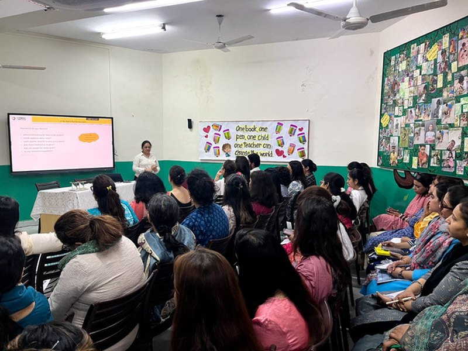
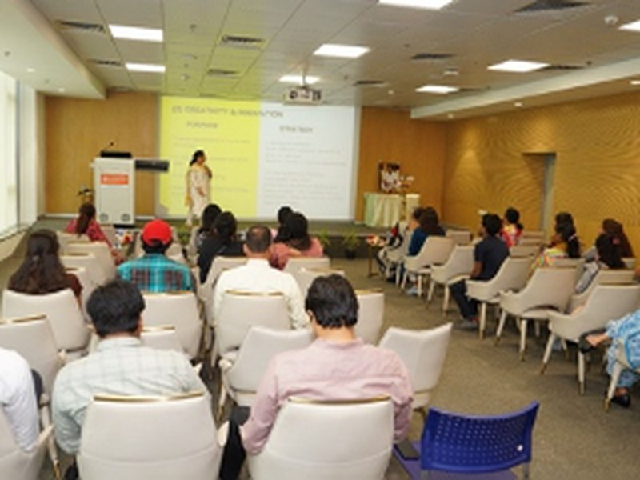
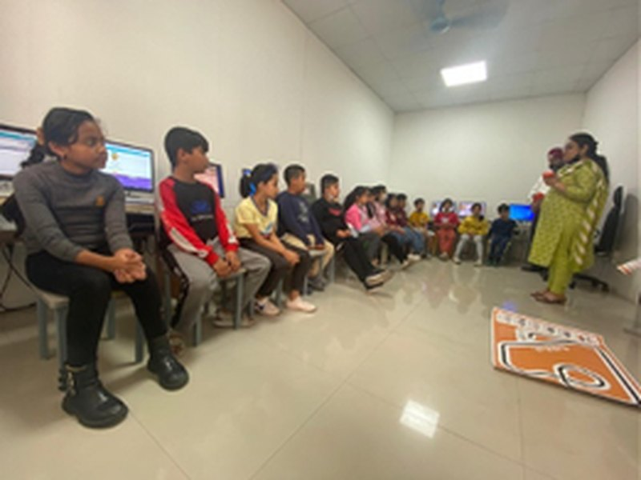

AI Training for Educators
Most AI training teaches prompts. This one teaches you to use AI systematically.
A systematic way to work with AI, where it becomes a thinking partner before an execution partner. You use it to sharpen your own thinking first, then to build reusable systems that hold across multiple tasks. The result is capability that grows, not just work that gets faster.
Benefits
Five benefits you get.
Sharper thinking
Clearer decisions about what a lesson actually needs, before you produce anything.
Ideas you would have missed
Angles, options and design choices that never surface when you work alone.
Quality you control
Confidence that what reaches your students meets your standard, not just what AI offered.
Depth and range
Richer material across more of your teaching, still in your own voice.
Systems that keep working
Reusable assets that save you the effort next time, and every time after.
Each benefit builds on the last. The systems you create in the fifth are only as strong as the thinking you develop in the first.
The Method
The IMPACTS Framework
IMPACTSDeveloped by Credo Learnings
A structured way to work with AI, built for educators. It gives you a clear order to follow. You form your professional judgment first, then execute on it, so what you produce carries your standard from the start.
The framework closes by turning what worked into something you keep. A method that succeeded once becomes an asset you can use again across the year.
It is tool agnostic by design, so it holds whether you use ChatGPT, Gemini, NotebookLM, or whatever arrives next.
A repeatable process
The same reliable sequence whether you are planning a unit, designing assessment, or preparing remedial material.
Output you can stand behind
Work that carries your professional standard, because your judgment shapes it before AI ever generates.
Effort that accumulates
Reusable systems rather than repeated conversations, so what you build keeps paying back.
Who It's For
Two ways in. The same method.
Build the practice for your own classroom
Individual bookings aren't open right now. Join the newsletter to stay in touch and hear from Credo Learnings as things develop.
- A method you can apply from the next lesson onward
- Reusable systems built around your own subject and year group
- An approach that transfers to any tool your school later adopts
- Applicable across CBSE, ICSE, IB and state boards
Build a shared standard across the staffroom
Commissioned workshops for full teaching staff, adapted to your subjects, year groups and existing tools.
- One shared method the whole staff can discuss and review
- Consistent practice academic leadership can actually assess
- Explicit guardrails on where students may and may not use AI
- Teacher readiness for the CBSE Computational Thinking mandate, Classes 3 to 8
- A position on AI the school can defend to parents and boards
How It Runs
Three stages.
Adapt
A conversation beforehand establishes which tools are already in use, which subjects and year groups are involved, and where the real pressure sits. The session is built around that rather than delivered off a shelf.
Work
A working session, not a lecture. The method gets applied to real material, the unit being taught next week, so participants leave having built something usable rather than having watched a demonstration.
Systematise
The closing stage turns what worked into reusable components and embeds them in normal workflow. This is where most AI training quietly fails, and where the method is designed to hold.
Results
What participants report.
89 to 91%
of participating teachers reported they intended to apply the method immediately.
DPS Vasant Vihar, New Delhi10/10
respondents rated the session valuable. 60% rated it extremely valuable and said they would use it right away.
Indraprastha International School, Dwarka100%
positive feedback across the full teacher cohort at the flagship NCR session.
DPS Vasant Vihar, New DelhiWho Runs It
Corporate rigor,
applied to the classroom.
I spent 15 years at Tata Consultancy Services leading structured software implementation at scale, building quality review systems, and training new professionals. Rigor was not optional. The systems had to work.
When I moved into education, the contrast was obvious. AI was entering classrooms faster than anyone could standardise its use, and educators were being handed tools without method. Not a failure of teaching, but a gap in institutional support.
Credo Learnings exists to close that gap. The aim is straightforward: build something reliable enough that it is still in use in week six, not just on workshop day.
Background
- 15 years, Tata Consultancy Services, software implementation and professional training
- Executive Management Program, IIT Bombay
- AI in Education: Leveraging ChatGPT for Teaching, OpenAI and Wharton Online
- AI for Everyone, DeepLearning.AI
- MCA, with B.Sc (Hons) Physics
- Host, The Learning Circle podcast, conversations with education leaders
The Learning Circle
The conversations behind the method.
I host school leaders, educationists and policy experts on where Indian education is actually heading. It is how the method stays current, tested against the people building the field.
Ms Aditi Misra
School Director, DPS International, Gurgaon. Why parents are the key to education success - conflict resolved by conversation, and the traits children imbibe rather than get taught.
EpisodeDr Ashok K. Pandey
Advisor, GEMS Education India; former Director, Ahlcon Group of Schools. Why India's schools have a mentoring problem, not a training problem - and the ROI case for investing in teachers.
EpisodeDr. Seetha Murty
Director, Silver Oaks International Schools, Hyderabad. How one leader scales purpose, not power, across 7,000 students and 5 campuses without hierarchy.
EpisodeAnustup Nayak
Classroom Instruction Practices & Early Childhood Education, Central Square Foundation. Why 70% of children struggle to learn, and how structured pedagogy is changing that across 11 states.
EpisodeLt. Gen. Surendra Kulkarni
Decorated military leader and educator. How controlled adversity and leadership - not grit alone - build resilient kids.
EpisodeSubir Shukla
Principal Coordinator, Group Ignus. Educational evolution, challenges and future directions.
EpisodeDr Vandna Shahi
National Award to Teachers 2022. Teacher training and professional development under NEP.
EpisodeAnil Mammen
Professor of Practice, CETE, TISS Mumbai. Learning design and lifelong learning.
EpisodeDr Lakshmi Kumar
Founder Director, The Orchid School, Pune. Student wellbeing in the age of social media.
EpisodeDr S. K. Rathor
Chairman and MD, Sanfort Group of Schools. The NEP 2020 journey.
EpisodeDr Paramjit Kaur
Director, Arya Samaj Group of Schools, Ludhiana. National Teacher Award 2015.
EpisodeNeeraja Ganesh
Leadership trainer and TEDx speaker. Building T shaped skills.
EpisodeAlka Singh
The Blue Bells Modern School, Gurgaon. Education for sustainable living.
EpisodeAmrita Burman
The role of technology in education.
On Stage
Keynotes, workshops and conferences



Writing
Articles and posts
Notes on AI in education, school leadership, and what structured practice actually looks like in a classroom.
Frequently Asked
Direct answers
What does it mean to use AI as a thinking partner?
Most AI use starts at execution. You open a chat, ask for a lesson plan, and accept what comes back. Using AI as a thinking partner reverses that order. Before generating anything, you use AI to surface the design choices hidden in the task, such as what the class actually needs, which misconceptions are likely, and what a good outcome would look like. Only once that thinking is clear does AI become an execution partner that drafts and iterates. This sequence is the core of the IMPACTS Framework and is what separates it from prompt training.
What is the IMPACTS Framework?
The IMPACTS Framework is a structured methodology developed by Credo Learnings for professional AI use in education. It gives educators a repeatable way to work with AI that starts with thinking rather than prompting, holds their professional standard through execution, and ends with reusable systems instead of one off conversations. It is tool agnostic by design, so it remains valid as AI tools change.
What does building reusable systems with AI actually mean?
It means moving beyond one off conversations. Instead of starting from a blank chat each time, you turn a working approach into a reusable component such as a configured assistant tuned to your subject and assessment style, a differentiation workflow matched to your class profile, or a review process that can be applied to any unit. You build the asset once and use it across the year. This is where most AI training stops short.
How is this different from generic AI or prompt training?
Prompt training teaches what to type. It stops working when the tool changes or the task differs from the example. This training gives you a system for working with AI, built on the IMPACTS Framework from Credo Learnings. You learn to establish professional intent before generating anything, draw out information you did not know to ask for, hold output to your own standard, and build reusable systems. Because it is tool agnostic, it holds across ChatGPT, Gemini, NotebookLM, or whatever comes next.
Is this for individual teachers or for whole schools?
Both, though at present new bookings are being taken for whole schools. Individual teachers can join the newsletter to stay in touch. Schools can commission the workshop for full teaching staff, which produces a shared standard across departments, consistent practice academic leadership can review, and an agreed position on student AI use. The underlying method is the same in each case.
Will AI use undermine student thinking?
That risk is real and the workshop addresses it directly. A core part of the training is establishing clear guardrails on where AI supports learning and where it quietly replaces the thinking a student needs to do themselves. Participants leave able to design AI assisted tasks that preserve student agency rather than bypass it.
Does the training cover the CBSE Computational Thinking and AI curriculum?
Yes. Following the CBSE mandate for Computational Thinking and AI curriculum across Classes 3 to 8, teacher readiness training is available so staff can deliver the curriculum with confidence. This covers structured thinking, algorithms, decomposition and pattern recognition as teachable classroom practice.
Who is Kavleen Kaur Bhatia?
Kavleen Kaur Bhatia is an AI trainer for educators and founder of Credo Learnings, based in Delhi NCR, India. She spent 15 years at Tata Consultancy Services leading structured software implementation and professional training before moving into education. She holds an MCA and a B.Sc (Hons) in Physics, with executive education from IIT Bombay and AI certification from OpenAI and Wharton Online. She hosts The Learning Circle podcast on K-12 education transformation in India.
Bring This to Your School